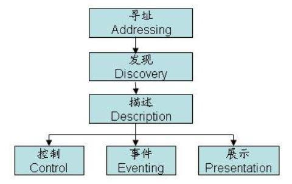
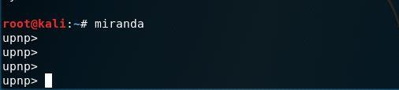
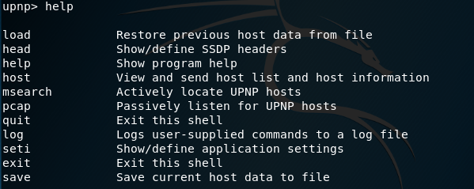
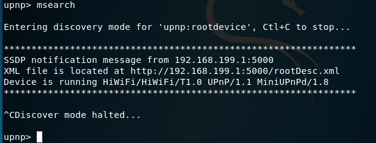
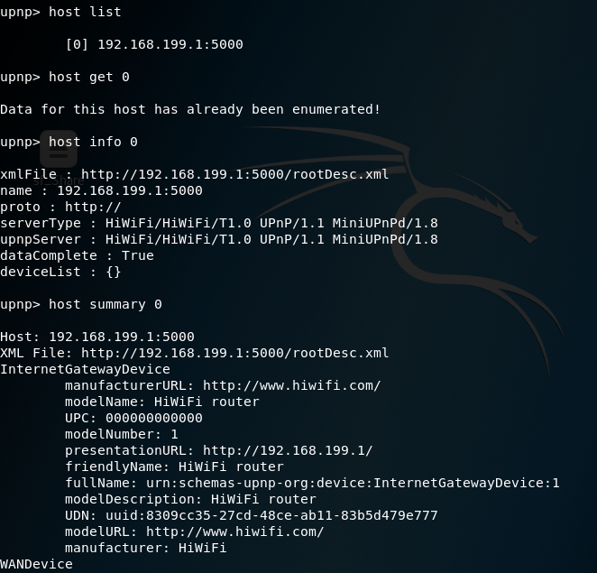
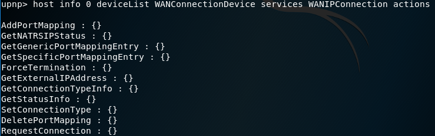
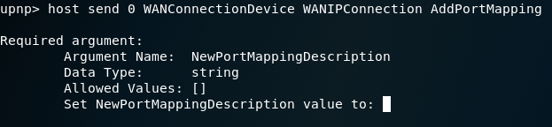
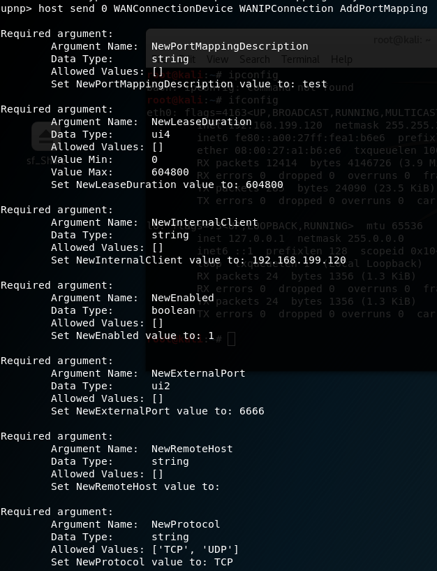
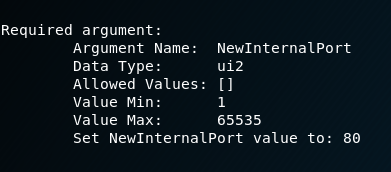
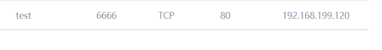

1.UPnP介绍
UPnP为即插即用的缩写（Universal Plug and Play）是一套网络协议。适用于家庭网络，用于设备间的发现和连接。希望实现任何设备只要一接入网络就能被网络中的所有其它设备发现，做到完全的即插即用。
2.UPnP工作方式

2.1寻址
每台设备通过IP的方式进行寻址，设备首次加入网络时通过DHCP服务获取IP，或者通过静态IP设置获得IP
2.2发现
UPnP通过SSDP（简单服务发现协议）完成设备的发现。
1）当设备加入网路时它向UPnP专用的组播地址（239.255.255.250:1900）发送消息宣告自己的存在。
NOTIFY * HTTP/1.1
Host:239.255.255.250:1900
Cache-control:max-age=1800
Location:http://192.168.0.1:49152/des.xml
Nt:upnp:rootdevice
Nts:ssdp:alive
Usn:uuid:de5d6118-bfcb-918e-0000-00001eccef34::upnp:rootdevice
Location：设备描述文件的URL。
2）UPnP的控制点（如路由器）为发现设备将向组播发送如下消息：
M-SEARCH* HTTP/1.1
Host:239.255.255.250:1900
Man:"ssdp:discover"
Mx:5
ST:ssdp:rootdevice
2.3描述
设备描述文件的URL包含在设备加入网络时发送的消息中
Location:http://192.168.0.1:49152/des.xml
这个xml文件可直接通过url访问。其中包含了设备的类型，设备提供的服务。
2.4控制
UPnP通过SOAP协议控制设备，按照XML描述文件中的信息，以Device（设备）+Service（设备的服务）+action（动作）+Variable（值）的形式控制设备。
3.UPnP协议利用
UPnP协议无任何身份验证机制，并且现在大部分路由器都默认开启了UPnP服务。大量的设备可利用UPnP进行配置修改。
通过UPnP协议在内网可以干很多事情如：端口转换，动态DNS，查看设备状态等。
3.1UPnP利用工具：miranda
Miranda是Kali提供的一款基于Python语言的UPNP客户端工具。它可以用来发现、查询和操作UPNP设备，尤其是网关设置。

miranda拥有独立的命令行界面可使用Tab键补齐命令。
通过help可列出miranda的命令。

3.2设备发现
- pcap：被动发现设备通过嗅探设备接入网络时发送的NOTIFY消息获取设备信息。
- msearch:通过主动发送M-serach消息来发现设备。（一般使用msearch比较快）

发现设备后可用host命令来查看详细信息。
- host list：查看发现的设备列表
- host get
：获取信息（查询summary之前需执行） - host info
：显示查询到的信息 - host summary 0 ：显示xml文件的摘要信息
（n为设备在列表中的编号）

3.3利用
获取设备列表
host info 0 deviceList
获取设备支持的命令/服务信息（命令很长使用Tab键补齐很方便 ）
host info 0 deviceList WANConnectionDevice services WANIPConnection actions

已添加端口映射为例：
使用host send 0 <device name> <service name> <action name>命令对设备进行控制

分别填入端口映射描述、持续时间、需要做端口映射的内网计算机IP、
是否启用、外网端口、外网主机范围、协议、内网的端口


打开路由器可以发现这条规则已经添加

参考文章：
https://blog.csdn.net/braddoris/article/details/41646789
https://tools.kali.org/information-gathering/miranda
https://dangfan.me/zh-Hans/posts/upnp-intro